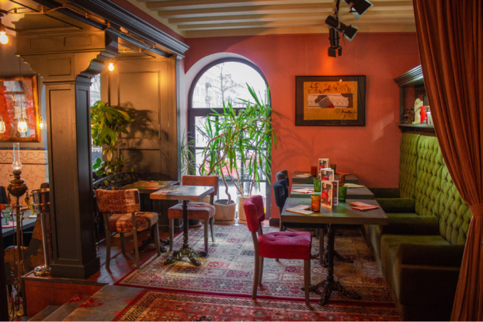
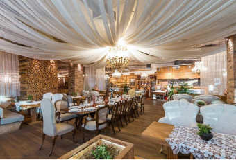
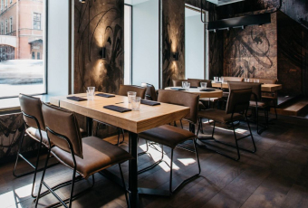

<section class="food" id="food">
  <div class="container">
    <div class="food__heading heading">
      <p class="food__title title" data-aos="fade-up" data-aos-duration="1000">
        Гурманам
      </p>
      <h3 class="food__subtitle subtitle" data-aos="fade-up" data-aos-duration="1000">
        Рестораны Рядом
      </h3>
    </div>
    <div class="food__content">
      <div class="food__images">
        <picture class="food__image food__image--big" data-aos="fade-up" data-aos-duration="1000">
          <source srcset="../img/food-big.webp" type="image/webp">
          
        </picture>
        <picture class="food__image food__image--second" data-aos="fade-up" data-aos-duration="1000">
          <source srcset="../img/food-small-1.webp" type="image/webp">
          
        </picture>
        <picture class="food__image food__image--thirst" data-aos="fade-up" data-aos-duration="1500">
          <source srcset="../img/food-small-2.webp" type="image/webp">
          
        </picture>
      </div>
      <div class="food__descr" data-aos="fade-up" data-aos-duration="1000">
        Перекусить и отдохнуть вы сможете в имеющихся совсем рядом столовых, кафе, барах и суши-барах. И не стоит забывать про главную
        ГАСТРО-тропу города, ул Рубинштейна! В каждом из этих заведений, вы будите поглощать глоток Питерской атмосферы
      </div>
    </div>
  </div>
</section>
